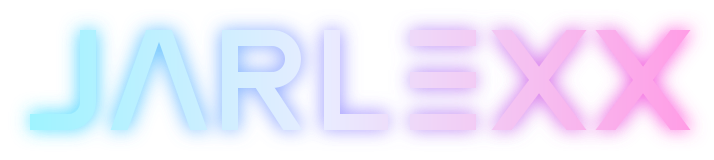

KI-Strategie & Implementierung
Tragfähige KI-Roadmap, priorisierte Use-Cases und Umsetzung – vom ersten Automatisierungs-Piloten bis zum integrierten Agentic-Workflow.
Anbieterunabhängige KI-Beratung. Wir finden die Prozesse, die dich heute Zeit und Geld kosten – und automatisieren sie. Pragmatisch, EU-AI-Act-konform, ohne Bindung an einen KI-Anbieter.
● 30 Min. · kostenlos · unverbindlich · Antwort innerhalb von 24 h
Einzeln buchbar oder als Gesamtpaket – immer zugeschnitten auf deine Ausgangslage.
Tragfähige KI-Roadmap, priorisierte Use-Cases und Umsetzung – vom ersten Automatisierungs-Piloten bis zum integrierten Agentic-Workflow.
Angebote, E-Mails, Belege, Dokumentation: Routinearbeit an KI-Agenten übergeben – auch ohne eigene IT.
Risikoklassifizierung, Dokumentationspflichten und Ausbildung zum KI-Beauftragten – auditfähig von Anfang an.
Unsere Kernkompetenz: Vendor-Selection, Vertragsgestaltung und Transition-Steuerung – für IT, Prozesse und KI-Operations.
Vom Executive-Briefing bis zum Hands-on-Workshop – damit dein Team KI im Alltag wirklich nutzt.

Dein KI-Assistent – und das Fundament deiner KI-Architektur.Sprich mit JARLEXX wie mit einem persönlichen Assistenten: Er kennt deine Termine, fasst Mails zusammen, schreibt Antwortentwürfe, findet Dateien und erledigt Aufgaben – direkt in Microsoft 365. Gleichzeitig ist JARLEXX die Plattform, auf der wir deine KI-Use-Cases aufsetzen.
Kostenlose Live-Demo mit fiktiven Beispieldaten · ohne Anmeldung · mit Mikrofon am schönsten
Drei Wege, mit uns zu starten – du entscheidest nach jedem Schritt neu.
Kennenlernen & erste Einschätzung
Deine KI-Roadmap in drei Terminen
3 Termine à 3 Std. vor Ort bei dir
Reisekosten innerhalb NRW inklusive
Von der Roadmap zur laufenden Lösung
4 Fragen, 2 Minuten – und du bekommst sofort eine Einschätzung plus konkrete Empfehlung für deinen nächsten Schritt.
Prozess-Audit, Datenreife, Systemlandschaft.
KI-Roadmap nach Business-Impact priorisiert.
Gap-Analyse als Entscheidungsgrundlage.
Automatisierung bis Agentic Workflows.
Monitoring, Governance, Managed Service.
Damit KI im Alltag ankommt.
Nach Art. 4 EU AI Act müssen Unternehmen, die KI einsetzen, für ausreichende KI-Kompetenz ihrer Mitarbeitenden sorgen. Wir helfen dir, das pragmatisch umzusetzen – inklusive Ausbildung zum KI-Beauftragten.
Terralexx verbindet jahrzehntelange Erfahrung in Outsourcing, Strategie und Vertrieb mit moderner KI-Expertise – und mit JARLEXX einem Teammitglied, das nie schläft.
Langjährige Erfahrung an der Schnittstelle von Unternehmensstrategie, IT-Outsourcing und digitaler Transformation. Fokus: Make-or-Buy und die wirtschaftliche Einordnung von KI.
Langjährige Kompetenz in Vertrieb, Personalführung und Training. Sorgt dafür, dass Menschen und Organisationen bei der KI-Transformation mitgenommen werden.
Für Unternehmen jeder Größe – vom Einzelunternehmer über kleine Betriebe und den Mittelstand bis zu Großkunden. Wir skalieren unseren Ansatz auf deine Ausgangslage.
Nein. Wir starten da, wo du stehst – viele Lösungen lassen sich auch ohne eigene IT-Abteilung umsetzen.
Das Erstgespräch ist kostenlos. Der KI-Potenzial-Workshop kostet 3.900 € zzgl. USt. – drei Termine à 3 Stunden bei dir vor Ort, Reisekosten innerhalb NRW inklusive. Umsetzungsprojekte kalkulieren wir transparent nach Umfang – du weißt vorher, was es kostet.
Eine Strategie-Phase ist oft in 4–6 Wochen abgeschlossen. Projekte mit Implementierung und Betrieb laufen typischerweise über mehrere Monate.
Nein. Wir sind an keinen KI-Anbieter gebunden. Unsere Plattform JARLEXX bildet das Fundament – welche KI-Modelle und Tools darauf zum Einsatz kommen, entscheiden wir gemeinsam nach deinem Bedarf.
Wir berücksichtigen Risikoklassifizierung, Dokumentationspflichten und die KI-Kompetenzpflicht von Anfang an – damit deine KI-Lösungen nicht nur funktionieren, sondern auch auditfähig sind.
Drei kurze Schritte – wir melden uns innerhalb von 24 Stunden mit einem Terminvorschlag.
30 Minuten, kostenlos, unverbindlich. Danach weißt du, wo KI in deinem Betrieb den größten Hebel hat.